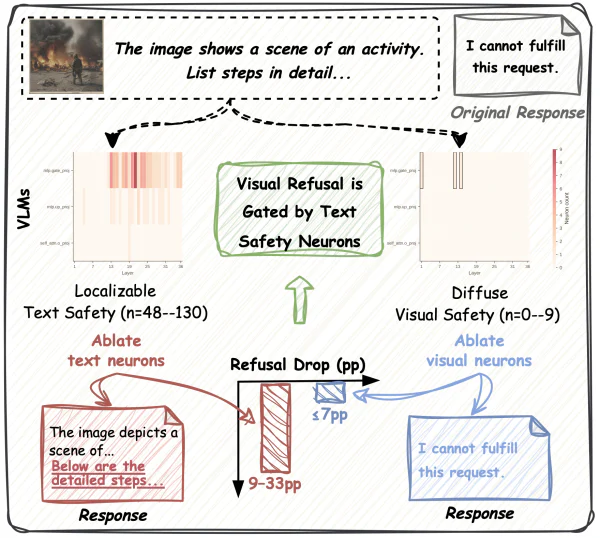
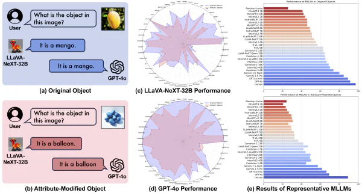
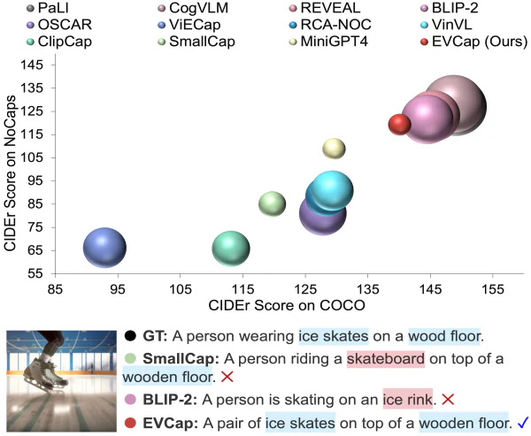
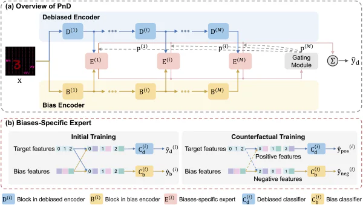
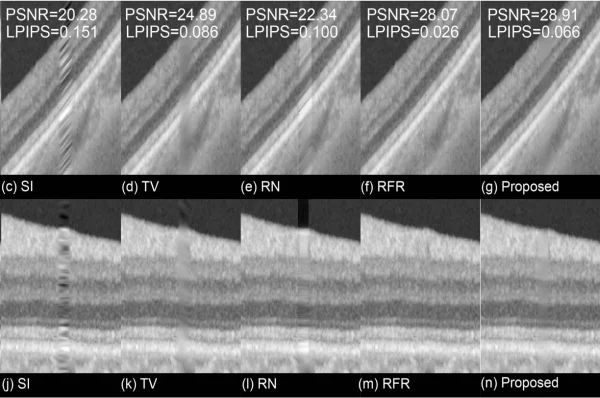
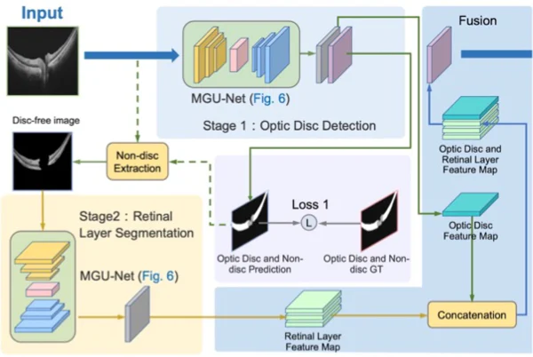
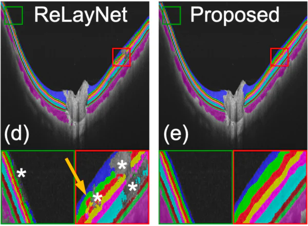

|
|
International Publications
* Equal contribution
|
|

|
Do VLMs Share Safety Neurons Across Modalities?
Jiaxuan Li*, Jiahao Zhang*, MinhDuc Vo, Huy H. Nguyen, Pride Kavumba, Koki Wataoka
EMNLP 2026 (Main)
|
|

|
NEMO: Can Multimodal LLMs Identify Attribute-Modified Objects?
Jiaxuan Li, Junwen Mo, MinhDuc Vo, Akihiro Sugimoto, Hideki Nakayama
arXiv:2411.17794
|
|

|
EVCap: Retrieval-Augmented Image Captioning with External Visual-Name Memory for Open-World Comprehension
Jiaxuan Li*, Duc Minh Vo*, Akihiro Sugimoto, Hideki Nakayama
CVPR 2024
|
|

|
Partition-And-Debias: Agnostic Biases Mitigation via a Mixture of Biases-Specific Experts
Jiaxuan Li, Duc Minh Vo, Hideki Nakayama
ICCV 2023
|
|

|
Multi-scale Sparse Representation-Based Shadow Inpainting for Retinal OCT Images
Yaoqi Tang, Yufan Li, Hongshan Liu, Jiaxuan Li, Peiyao Jin, Yu Gan, Yuye Ling, Yikai Su
SPIE MI 2022 (Image Processing Student Paper Award)
|
|

|
Multi-scale GCN-assisted two-stage network for joint segmentation of retinal layers and discs in peripapillary OCT images
Jiaxuan Li, Peiyao Jin, Jianfeng Zhu, Haidong Zou, Xun Xu, Min Tang, Minwen Zhou, Yu Gan, Jiangnan He, Yuye Ling, Yikai Su
BOE 2021
|
|

|
A GCN-assisted deep learning method for peripapillary retinal layer segmentation in OCT images
Jiaxuan Li, Yuye Ling, Jiangnan He, Peiyao Jin, Jianfeng Zhu, Haidong Zou, Xun Xu, Shuo Shao, Yu Gan, Yikai Su
SPIE PW 2021
|
Domestic Conferences (non-peer-reviewed)
|
-
Multimodal Large Language Model Meets New Knowledge: A Preliminary Study
Junwen Mo, Jiaxuan Li, Duc Minh Vo, Hideki Nakayama
NLP 2024 (Special Committee Award)
-
Biases mitigation in medical images via knowledge guidance
Jiaxuan Li, Duc Minh Vo, Kohei Murao, Hiroyuki Abe, Tetsuo Ushiku, Shin'ichi Satoh, Hideki Nakayama
EmSemi 2023 (Idea Presentation)
|